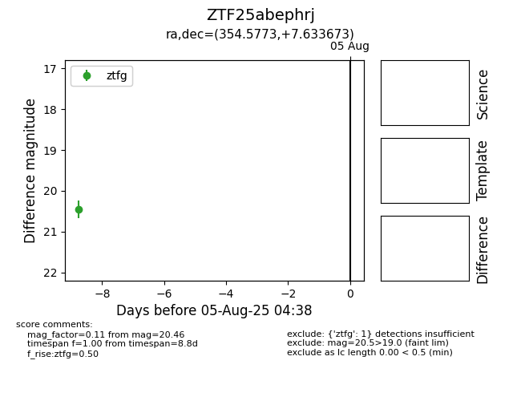

Target ZTF25abephrj at 2025-08-05 04:38, see:
FINK: fink-portal.org/ZTF25abephrj
Lasair: lasair-ztf.lsst.ac.uk/objects/ZTF25abephrj
ALeRCE: alerce.online/object/ZTF25abephrj
alt names
ZTF25abephrj (ztf,fink)
coordinates:
equatorial (ra, dec) = (354.5773,+7.63367)
galactic (l, b) = (93.3339,-50.98696)
photometry
last ztfg=20.46
1 ztfg detections
